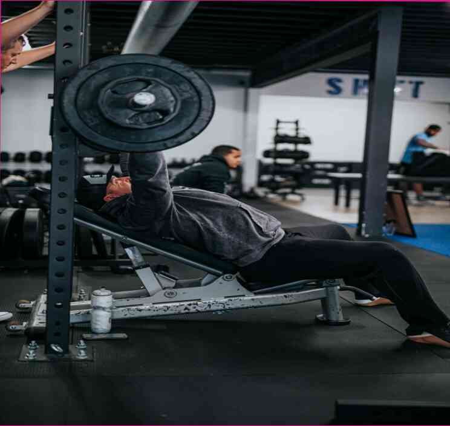

Harm from the barbecue. Tips from a fitness trainer
Harm from the barbecue. Tips from a fitness trainer The last two years have not been without injuries. In fact, the first two months of my professional career were practically uneventful. Injuries are a fact of life. Therefore, the main advice I can give is: don't be afraid of them. It's scary, but it's the first step to progress.I have already talked about a lot of injuries in previous articles, so I won't explain why I decided to write about them. Suffice it to say that for a healthy body, a healthy mind and a motivated heart, these are just some of the things that are required for success. And until I achieved these goals, I seriously considered not pursuing a sport. But as practice has shown, perseverance pays off. successes. Therefore, here we go:1) Exercise on the treadmill or on the street.If the opportunity presents itself, jump-start your physical development. Take a walk, run, or play sports if you can. Just start doing it. And you will quickly notice the benefits. Increase your stamina level and, assuming you have the right equipment, you can do a lot. Even do a couple of sets each on your own. This is a basic human mechanism that will help you get better. 2) Enjoy physical activity.If you if you want to be confident that you can safely engage in physical activity, contact a fitness trainer. Even if you don't want to, you can always choose a gym instead of going to school. This is convenient for you and your family. 3) Reduce your stress.Groups of people – couples, children, and older people – can easily cope with the inability to go to the gym.Groups of friends, family, co-workers, students – can easily cope with the problem of insufficient motivation to go to the gym. Have a couple of days without going to the gym and train at home. This is your opportunity to really start building your body. 4) Watch your body temperature.When you sit in the car, take a deep breath and slowly exhale. This action will help you better monitor your body temperature. During an intense workout, try to lower your body to a comfortable state. After which, when you wake up, take a warm shower and enjoy it. This is a ritual that will help you remember your health during the next day, and also remind you of the positive energy of morning. 5) Take a walk before going to the gym.Have a walk before going to the gym.This is one of the most important and the most time-consuming aspects of fitness. The best option is to have a friend or relative lead you in a positive direction. You can also support yourself by doing some sports. In General, pay attention to your state of health, and don't forget about vitamins and minerals. Although it may seem like a long process